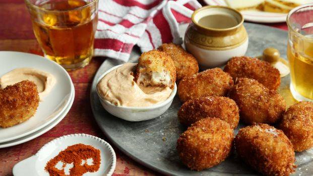
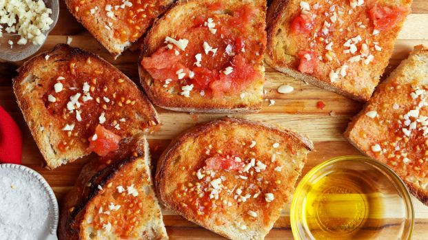
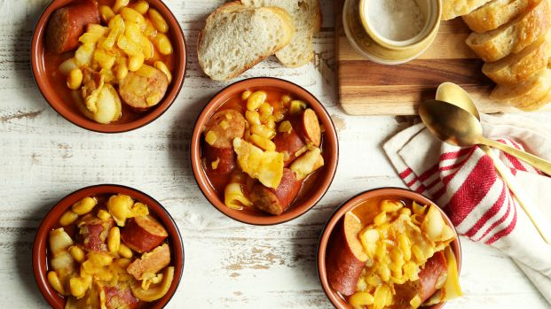

Ham & Manchego Croquetas with Smoked Paprika Aioli
Croquetas are an essential for any tapas menu. These little balls of cheesy rice and serrano ham are breaded with panko and then fried to make a crispy crust.
Pan con Tomate
This humble tapa is really just a toasted slice of crusty bread that's been rubbed with garlic and fresh tomato. Add high-quality salt and olive oil to taste.
Fabada Asturiana
The combo of chorizo, ham and beans was very satisfying, and anything saffron in it is good! I served this with a spinach, walnut and manchego salad.